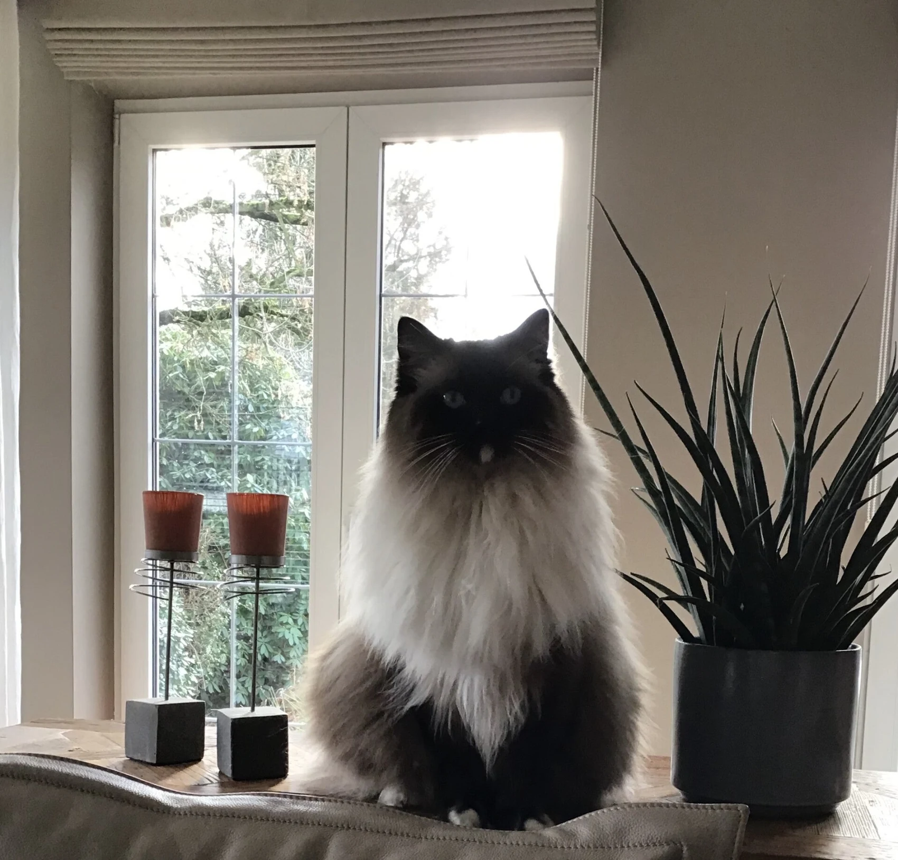
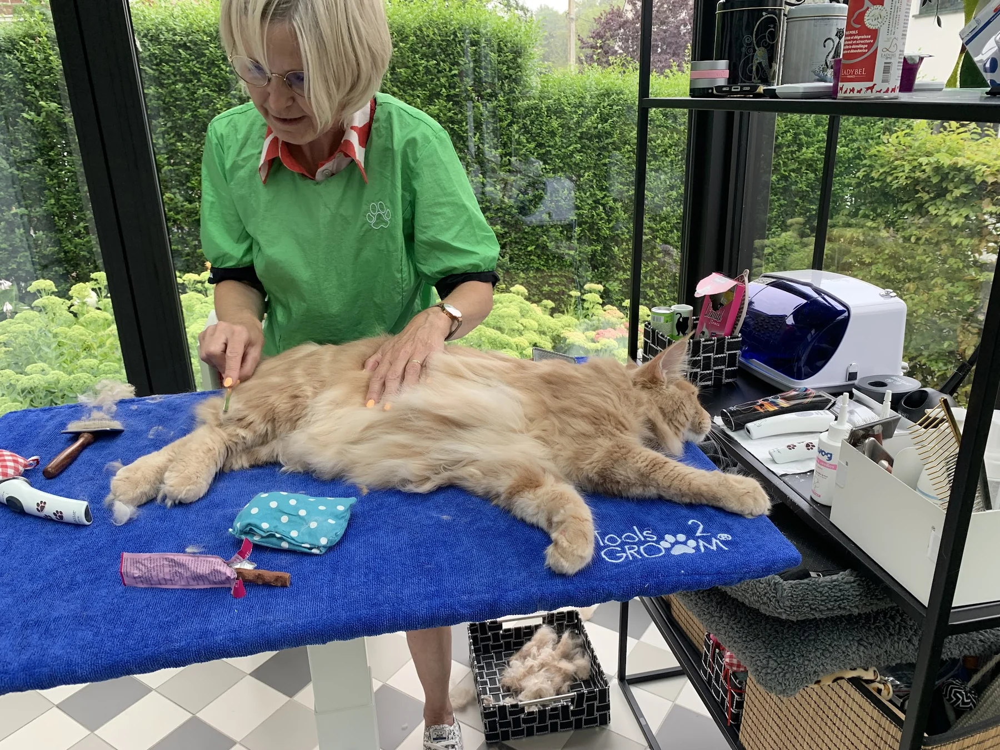
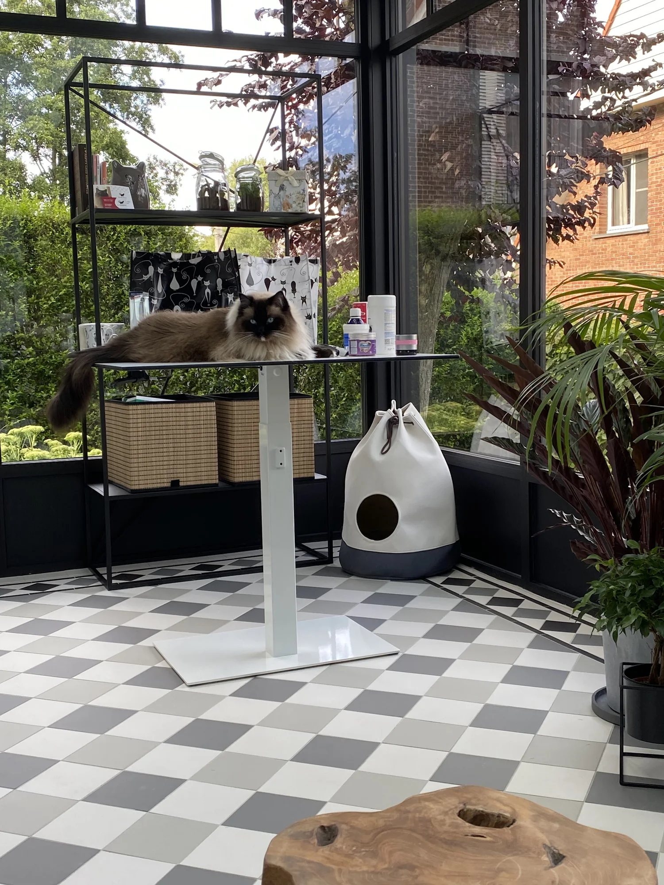
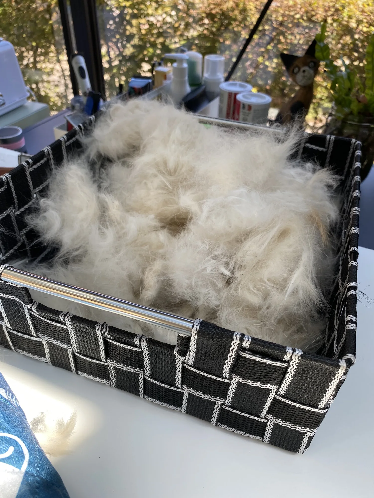
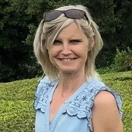
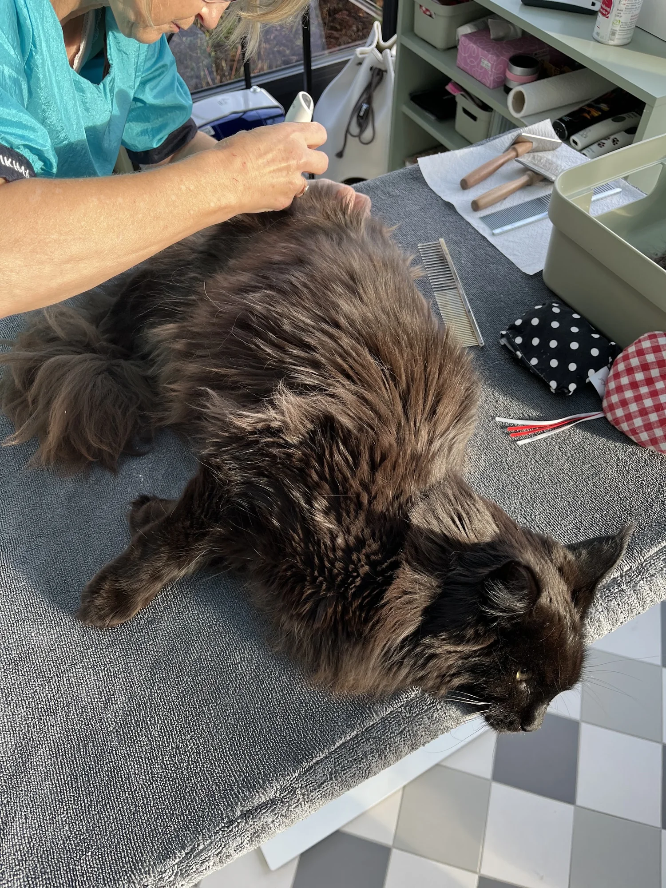
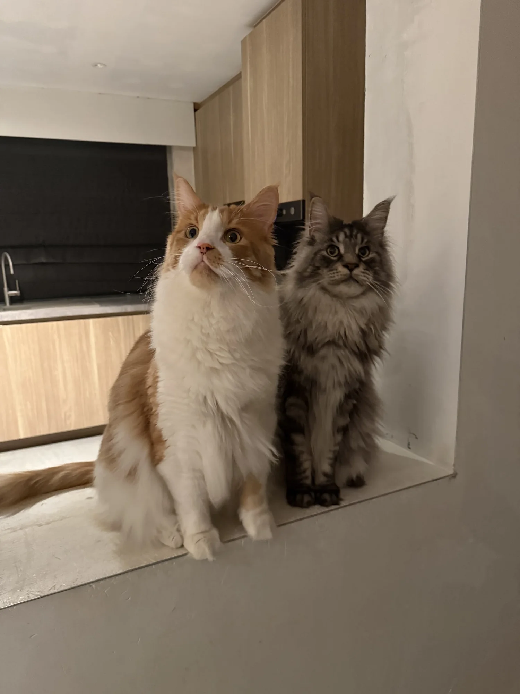

Vachtverzorging voor katten in Temse
Elke kat op haar eigen tempo.
Nadine borstelt, ontklit en verzorgt katten in haar salon in de Spoorweglaan. Rustig, met zo weinig mogelijk dwang, en je mag er gewoon bij blijven.
4,9★★★★★32 reviews op Google
Dokus woont bij Nadine thuis
Het salon
Huiselijk ingericht, met zicht op de tuin.
Katten houden van voorspelbaarheid en routine. Daarom is het salon ingericht als een plek waar het aangenaam vertoeven is.


- KatvriendelijkJe kat mag altijd weg van de trimtafel als ze dat wil.
- VachtvriendelijkMet aandacht voor de natuurlijke haarcyclus.
- KlantvriendelijkJij kiest of je erbij blijft of je kat komt afzetten.
Tarieven 2026
Vijf formules, naargelang de vacht.
Welke formule past, hangt af van de vacht. Twijfel je? Beschrijf de vacht in je aanvraag, dan kijkt Nadine mee.

Vacht zonder klittenComfort
€ 45*Vachtcontrole, borstelen en kammen, ogen en oren reinigen. Nagels knippen als het nodig is.
Vacht met klittenExtra Comfort
€ 55*Alles van Comfort, plus klitten uitkammen of wegscheren. Een sanitaire trim als het nodig is.
Kort bezoekMini Comfort
€ 30Sanitaire trim met oor- en oogreiniging. Of kittengewenning: een eerste kennismaking met vachtzorg, tot 6 maanden.
Enkel de nagelsPawdicure
€ 15Nagels knippen.
Vervilte vachtExtreme
€ 70Een (bijna) volledig vervilte vacht scheren. Dat gebeurt enkel als het nodig is voor het welzijn van de kat.
* Richtprijzen. Ze kunnen afwijken naargelang de staat van de vacht. Er zijn ook waardebons.
Wie ben ik?
Als kind wou ik dierenarts worden.
Het werd eerst de bank en daarna het onderwijs. Maar een kinderdroom komt vroeg of laat terug. Zo ontstond het idee om mijn zorg in te zetten voor katten en hun baasjes.

Nadinebezieler van The Magnifi'Cat- Vakopleiding Kattentrimmen, Huisdier Kennis Instituut Bunnik2020
- Tellington TTouch voor katten2022
- EHBO voor kattentrimmers2023
- Welzijn van de seniorkat2025


Baasjes aan het woord
Wat ze achteraf schrijven.
op Google
"Nadine is echt geweldig met katten. Omdat ik in Nederland woon en de afstand te ver is heb ik een trimster aan huis genomen maar kom telkens toch weer bij Nadine terug. Waarom zou je denken? Gewoon omdat Nadine de beste trimster is! Altijd geduldig,begripvol,vertrouwd, vriendelijk en superlief voor mijn 2 ragdolls Felix en Noa! Een super tevreden baasje Kristof"
"Eerste bezoekje met Bo
Een groot avontuur want dit heeft ze nog nooit gedaan.
Haren uitgekamd en nagels terug in model gebracht.
Wat een service.
Geduldig, zacht, vriendelijk echt top"
"Ik ben heel tevreden toen ik mijn kat kwam terug halen , mooi getrimd , nageltjes ingekort het was mooi gedaan"
Reacties van klanten op themagnificat.be, letterlijk overgenomen.
Afspraak maken
Vertel iets over je kat.
Het salon werkt enkel na afspraak. Vul in wie er komt en wat er moet gebeuren, dan staat je bericht klaar in WhatsApp.
- 1Breng een eigen dekentje mee, niet vers gewassen. Die geur stelt je kat gerust.
- 2Blijf erbij als je kat daar rustiger van wordt, of zet haar af op het afgesproken uur.
- 3Wordt de stress te groot, dan stopt Nadine en bekijken jullie samen hoe het verder kan.
Salon
Spoorweglaan 399140 Temse